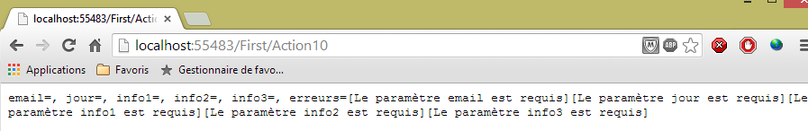
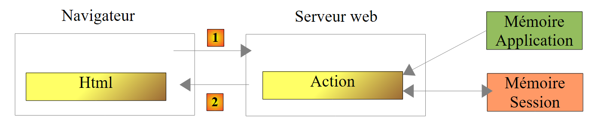
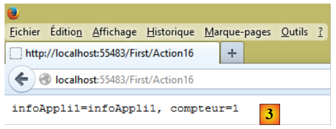

4. مدل یک اکشن
بیایید به معماری یک برنامه ASP.NET MVC بازگردیم:
 |
در فصل قبلی، ما فرآیند مسیریابی یک درخواست به کنترلر و اکشنی که آن را پردازش میکند را بررسی کردیم – سازوکاری که به آن مسیریابی (روتینگ) گفته میشود. ما همچنین پاسخهای مختلفی را که یک اکشن میتواند به مرورگر بازگرداند، تشریح کردهایم. تا اینجا، ما اکشنهایی را بررسی کردهایم که از درخواست ارسالشده به آنها استفاده نکردهاند. یک درخواست [1] اطلاعات مختلفی را با خود حمل میکند که ASP.NET و MVC آنها را در قالب یک قالب به اکشن ارائه میدهند. این اصطلاح نباید با قالب M یک نمای V با شناسه [2c] که توسط عمل تولید میشود، اشتباه گرفته شود:
 |
- درخواست مشتری HTTP به صورت [1] میرسد؛
- در [2]، اطلاعات موجود در درخواست به قالب اقدام [3]—که اغلب، اما نه لزوماً، یک کلاس است—تبدیل میشود که به عنوان ورودی برای اقدام [4] عمل میکند؛
- در [4]، اکشن با استفاده از این مدل، یک پاسخ تولید خواهد کرد. این پاسخ دو مؤلفه خواهد داشت: یک ویو V [6] و مدل M برای این ویو [5];
- ویو V [6] از مدل خود M [5] برای تولید پاسخ HTTP که برای کلاینت در نظر گرفته شده است، استفاده خواهد کرد.
در مدل MVC، اکشن [4] بخشی از C (کنترلکننده) را تشکیل میدهد، مدل برای ویو [5]، M است و ویو [6]، V است.
این فصل مکانیزمهای پیوند دادن اطلاعاتی را که در درخواست حمل میشود – که ذاتاً یک رشته از کاراکترها است – به مدل اقدام بررسی میکند، که ممکن است کلاسی با خواص انواع مختلف باشد.
4.1. ابتداییسازی پارامترهای اکشن
ما یک پروژه جدید، [1]، به راهحل موجود اضافه میکنیم که بر اساس ASP.NET و MVC است:
 |
 |
- به [2]، نام پروژه جدید؛
- در [3, 4]، ما یک پروژه پایه ASP.NET MVC را انتخاب میکنیم؛
- در [5]، پروژهٔ جدید.
ما پروژهٔ جدید را بهعنوان پروژهٔ راهاندازی راهحل تعیین خواهیم کرد.
همانطور که در بخش ۳.۱ انجام شد، ما یک کنترلر به نام [First] [1] ایجاد میکنیم:
 |
در این کنترلر، اکشن زیر را ایجاد میکنیم: [Action01]:
using System.Web.Mvc;
namespace Exemple_02.Controllers
{
public class FirstController : Controller
{
// Action01
public ContentResult Action01(string nom)
{
return Content(string.Format("Contrôleur=First, Action=Action01, nom={0}", nom));
}
}
}
ویژگی جدید در خط ۸ است: متد [Action01] دارای یک پارامتر است. در این فصل، به روشهای مختلف مقداردهی اولیه پارامترهای یک اکشن میپردازیم. پارامتر [nom] در بالا به ترتیب با مقادیر زیر مقداردهی اولیه میشود:
Request.Form["nom"] | یک پارامتر به نام [nom] که توسط یک فرمان POST ارسال شده است |
RouteData.Values["nom"] | یک عنصر از URL به نام [nom] |
Request.QueryString["nom"] | یک پارامتر به نام [nom] ارسال شده توسط یک فرمان GET |
Request.Files["nom"] | یک فایل آپلودشده با نام [nom] |
بیایید این موارد مختلف را بررسی کنیم. بیایید URL و [/First/Action01?nom=someone] را مستقیماً در مرورگر درخواست کنیم. پاسخ زیر را دریافت میکنیم:
 |
درخواست مرورگر برای HTTP به شرح زیر بود:
- خط ۱: درخواست یک GET است. URL درخواستی شامل پارامتر [nom] است. در سمت سرور، درخواست به اکشن [Action01] مسیریابی میشود که امضای زیر را دارد:
public ContentResult Action01(string nom)
برای تخصیص مقدار به پارامتر 'name'، ASP.NET MVC به ترتیب، مقادیر Request.Form["nom"] را به صورت متوالی امتحان میکند، RouteData.Values["nom"], Request.QueryString["nom"], Request.Files["nom"]. به محض اینکه یک مقدار پیدا کند، متوقف میشود. پارامتر [nom] که در درون URL از GET جای گرفته است، توسط چارچوب در Request.QueryString["nom"] قرار داده شده است. با این مقدار، [someone]، پارامتر [nom] از [Action01] مقداردهی اولیه میشود. سپس کد مربوط به [Action01] اجرا میشود:
return Content(string.Format("Contrôleur=First, Action=Action01, nom={0}", nom), "text/plain", Encoding.UTF8);
این کد پاسخ ارسالشده به کلاینت را فراهم میکند:
 |
توجه: مکانیزم پیوند پارامتر نسبت به حروف بزرگ و کوچک بیتفاوت است. بنابراین، اگر اکشن ما به صورت زیر تعریف شده باشد:
public ContentResult Action01(string NOM)
و پارامتر ارسالشده [?NoM=zébulon] باشد، پیوند همچنان برقرار خواهد شد. پارامتر [NOM] از [Action01] مقدار [zébulon] را دریافت خواهد کرد.
اکنون، بیایید همان URL را با استفاده از POST درخواست کنیم. برای این کار، از برنامه [Advanced Rest Client] استفاده میکنیم:
 |
- به [1]، URL درخواستی؛
- در [2]، از فرمان POST استفاده خواهد شد؛
- در [3]، پارامترها از POST.
بیایید این درخواست را ارسال کنیم و به لاگهای HTTP نگاه کنیم. درخواست HTTP به شرح زیر است:
 |
- در [1]، POST؛
- در [2]، پارامترها از POST. از نظر فنی، آنها پس از هدرهای HTTP، و پس از خط خالی که پایان آن هدرها را اعلام میکند، ارسال شدند؛
- در [3]، پاسخ دریافتی. پارامتر [nom] از POST بهدرستی بازیابی شده است. از جمله مقادیری که برای پارامتر 'name' آزمایش شدند: Request.Form["nom"], RouteData.Values["nom"], Request.QueryString["nom"]، Request.Files["nom"]، مورد اول کار کرد.
حالا بیایید مسیر پیشفرض را در [App_Start/RouteConfig] تغییر دهیم. در حال حاضر این مسیر به شرح زیر است:
routes.MapRoute(
name: "Default",
url: "{controller}/{action}/{id}",
defaults: new { controller = "Home", action = "Index", id = UrlParameter.Optional }
);
بیایید آن را به این صورت تغییر دهیم:
routes.MapRoute(
name: "Default",
url: "{controller}/{action}/{nom}",
defaults: new { controller = "Home", action = "Index", nom = UrlParameter.Optional }
);
- در خط ۳، ما [nom] را به عنوان عنصر سوم یک مسیر نامگذاری کردهایم؛
- خط ۴: این عنصر بهعنوان اختیاری اعلام شده است.
اکنون، بیایید برنامه را دوباره کامپایل کنیم و مستقیماً در مرورگر URL [/First/Action01/zébulon] را درخواست کنیم. پاسخ زیر را دریافت میکنیم:
 |
در میان مقادیری که برای پارامتر 'name' آزمایش شدند، Request.Form["nom"]، RouteData.Values["nom"]، Request.QueryString["nom"]، Request.Files["nom"]، دومی کار کرد.
بیایید همان پرسوجو را با POST و [Advanced Rest Client] اجرا کنیم:
 |
- در [1]، ما مقداری را به عنصر {name} مسیر اختصاص دادیم؛
- در [2]، ما یک پارامتر [nom] به درخواست POST اضافه کردیم؛
- پاسخ دریافتی در [3] است.
در میان مقادیر آزمایششده برای پارامتر [nom]، Request.Form["nom"]، RouteData.Values["nom"]، Request.QueryString["nom"]، Request.Files["nom"]، دو مورد مناسب بودند: دو مورد اول. مورد اول استفاده شد.
4.2. اعتبار پارامترهای اکشن را بررسی کنید
اگر یک اقدام دارای پارامتری به نام [p] باشد، ASP.NET و MVC تلاش خواهند کرد تا یکی از مقادیر Request.Form["p"] را تخصیص دهند، RouteData.Values["p"], Request.QueryString["p"], Request.Files["p"]. سه مقدار اول رشتههای کاراکتری هستند. اگر پارامتر [p] از نوع [string] نباشد، ممکن است مشکلاتی پیش آید.
بیایید اقدام جدید زیر را ایجاد کنیم:
// Action02
public ContentResult Action02(int age)
{
string texte = string.Format("Contrôleur={0}, Action={1}, âge={2}", RouteData.Values["controller"], RouteData.Values["action"],age);
return Content(texte, "text/plain", Encoding.UTF8);
}
- در خط ۲، اکشن [Action02] پارامتری به نام [age] از نوع int را میپذیرد. رشتهٔ بازیابیشده باید قابل تبدیل به int باشد.
بیایید URL را با [http://localhost:55483/First/Action02?age=21] فراخوانی کنیم. صفحه زیر را دریافت میکنیم:
 |
بیایید URL و [http://localhost:55483/First/Action02?age=21x] را درخواست کنیم. صفحه زیر را دریافت میکنیم:
 |
این بار، یک صفحهٔ خطا بازگردانده شد. جالب است که سربرگهای HTTP ارسالشده توسط سرور در این مورد را بررسی کنیم:
- خط ۱: سرور با کد [500 Internal Server Error] پاسخ داد و یک صفحه HTML (خط ۳) به حجم ۱۲,۴۳۸ بایت (خط ۵) ارسال کرد تا دلایل احتمالی این خطا را توضیح دهد.
اکنون بیایید اقدام زیر [Action03] را ایجاد کنیم:
// اقدام ۰۳
public ContentResult Action03(int? age)
{
...
}
[Action03] با [Action02] یکسان است، با این تفاوت که نوع پارامتر [age] به int? تغییر یافته است، که به معنای عدد صحیح یا null است.
بیایید URL و [http://localhost:55483/First/Action03?age=21x] را درخواست کنیم. صفحه زیر را دریافت میکنیم:
 |
تبدیل [21x] به نوع int برای MVC ناموفق بود. بنابراین، مطابق با نوع </span>**<span style="color: #000000">int?</span>**<span style="color: #000000"> آن، مقدار null به پارامتر [age] اختصاص داده شد. با این حال، میتوان تشخیص داد که آیا پارامتر توانسته است مقداری را از پرسوجو دریافت کند یا خیر.
ما در حال ایجاد اقدام جدید زیر، [Action04]، هستیم:
// اقدام ۰۴
public ContentResult Action04(int? age)
{
bool valide = ModelState.IsValid;
string texte = string.Format("Contrôleur={0}, Action={1}, âge={2}, valide={3}", RouteData.Values["controller"], RouteData.Values["action"], age, valide);
return Content(texte, "text/plain", Encoding.UTF8);
}
- خط ۲: نوع [int?] حفظ شده است. به طور خاص، این امر تضمین میکند که درخواست نیازی به ارائه پارامتر [age] ندارد، و در نتیجه به آن مقدار null اختصاص داده میشود؛
- خط ۴: بررسی میکنیم که آیا مدل اقدام معتبر است یا خیر. مدل اقدام شامل تمام پارامترهای آن است، در این مورد [age]. مدل در صورتی معتبر است که به همه پارامترها مقداری از درخواست اختصاص داده شده باشد، یا در صورتی که نوع پارامتر اجازه دهد، مقدار null به آن اختصاص یابد؛
- خط ۵: مقدار متغیر [valide] به متنی که به کلاینت ارسال میشود، اضافه میشود.
بیایید URL و [http://localhost:55483/First/Action04?age=21x] را درخواست کنیم. صفحه زیر را دریافت میکنیم:
 |
تبدیل ASP.NET به نوع int از MVC ناموفق بود. بنابراین، مطابق با نوع int خود، مقدار null را به پارامتر [age] اختصاص داد. با این حال، همانطور که از مقدار [valide] پیداست، خطاهای تبدیل وجود داشت.
امکان مشاهده پیام خطای مربوط به تبدیل ناموفق وجود دارد. بیایید اقدام جدید زیر را بررسی کنیم:
// اقدام 05
public ContentResult Action05(int? age)
{
string erreurs = getErrorMessagesFor(ModelState);
string texte = string.Format("Contrôleur={0}, Action={1}, âge={2}, valide={3}, erreurs={4}", RouteData.Values["controller"], RouteData.Values["action"], age, ModelState.IsValid, erreurs);
return Content(texte, "text/plain", Encoding.UTF8);
}
عنصر جدید در خط ۴ قرار دارد. در اینجا یک متد خصوصی به نام [getErrorMessagesFor] فراخوانی میشود که وضعیت مدل اکشن به آن ارسال میگردد. این متد رشتهای را بازمیگرداند که شامل تمام پیامهای خطایی است که رخ دادهاند. این متد به شرح زیر است:
private string getErrorMessagesFor(ModelStateDictionary état)
{
List<String> erreurs = new List<String>();
string messages = string.Empty;
if (!état.IsValid)
{
foreach (ModelState modelState in état.Values)
{
foreach (ModelError error in modelState.Errors)
{
erreurs.Add(getErrorMessageFor(error));
}
}
foreach (string message in erreurs)
{
messages += string.Format("[{0}]", message);
}
}
return messages;
}
- خط ۱: پارامتر واقعی [ModelState] که به متد ارسال میشود از نوع [ModelStateDictionary] است؛
- خط ۳: یک لیست از پیامهای خطا که در ابتدا خالی است؛
- خط ۵: بررسی میشود که آیا وضعیت ارسالشده بهعنوان پارامتر معتبر است یا خیر. در صورت عدم اعتبار، تمام پیامهای خطا در یک رشته متنی واحد متصل میشوند؛
- خط ۷: نوع [ModelStateDictionary] دارای خاصیتی به نام [Values] است که مجموعهای از انواع [ModelState] میباشد. برای هر عنصر مدل یک [ModelState] وجود دارد. برای مثال:
- ModelState["age"]: وضعیت قالب اقدام برای پارامتر [age]،
- ModelState["age"]. خطاها: مجموعه خطاها برای این پارامتر. خطاها از نوع [ModelError] هستند،
- ModelState["age"].Errors[i].ErrorMessage: هر پیام خطا شماره i برای پارامتر [age] از قالب
- ModelState["age"]. خطاها[i]. استثنا: استثنا برای خطای شماره i در مجموعه خطاها برای پارامتر [age],
- ModelState["age"].Errors[i].Exception.InnerException: علت این استثنا،
- ModelState["age"].Errors[i].Exception.InnerException.Message: پیامی که علت استثنا را توضیح میدهد؛
- خط ۹: ما برای یک [ModelState] مشخص، مجموعه [Errors] را مرور میکنیم؛
- خط ۱۱: پیام خطا برای یک [ModelError] مشخص بازیابی شده و به لیست پیامهای خطا در خط ۳ اضافه میشود؛
- خطوط 14–17: عناصر لیست پیامهای خطا در یک رشته واحد ادغام میشوند.
متد [getErrorMessageFor] در خط ۱۱ به شرح زیر است:
private string getErrorMessageFor(ModelError error)
{
if (error.ErrorMessage != null && error.ErrorMessage.Trim() != string.Empty)
{
return error.ErrorMessage;
}
if (error.Exception != null && error.Exception.InnerException == null && error.Exception.Message != string.Empty)
{
return error.Exception.Message;
}
if (error.Exception != null && error.Exception.InnerException != null && error.Exception.InnerException.Message != string.Empty)
{
return error.Exception.InnerException.Message;
}
return string.Empty;
}
- خط 1: یک نوع [ModelError] دریافت میشود که خطایی مربوط به یکی از عناصر مدل اقدام را در بر میگیرد. پیام خطا از سه مکان مختلف بازیابی میشود:
- در [ModelError].ErrorMessage، خطوط ۳–۶؛
- در [ModelError].Exception.Message، خطوط ۷–۱۰؛
- در [ModelError].Exception.InnerException.Message، خطوط ۱۱–۱۴؛
در حین آزمایش، متوجه میشویم که پیام خطا بسته به ماهیت عنصر مدل، در این سه مکان یافت میشود. باید قاعدهای وجود داشته باشد که به ما امکان دهد پیام خطای مرتبط با یک عنصر مدل را به طور قابل اعتمادی به دست آوریم، اما نمیدانم آن چیست. بنابراین، آن را در مکانهای مختلفی که ممکن است پیدا کنم، به دنبال یک ترتیب مشخص میگردم. به محض یافتن یک پیام غیرخالی، آن بازگردانده میشود.
بیایید URL [http://localhost:55483/First/Action05?age=21x] را درخواست کنیم. صفحه زیر را دریافت میکنیم:
 |
4.3. یک عمل با چندین پارامتر
بیایید اقدام جدید زیر را در نظر بگیریم:
// Action06
public ContentResult Action06(double? poids, int? age)
{
string erreurs = getErrorMessagesFor(ModelState);
string texte = string.Format("Contrôleur={0}, Action={1}, poids={2}, âge={3}, valide={4}, erreurs={5}", RouteData.Values["controller"], RouteData.Values["action"], poids, age, ModelState.IsValid, erreurs);
return Content(texte, "text/plain", Encoding.UTF8);
}
- خط ۲: ما دو پارامتر داریم، [poids] و [age].
قوانین فوقالذکر اکنون برای هر دو پارامتر اعمال میشوند. در اینجا چند مثال از اجرا آورده شده است:
 |
 |
4.4. استفاده از یک کلاس بهعنوان الگو برای یک اقدام
بیایید کلاسی را تعریف کنیم که بهعنوان الگو برای یک اقدام عمل کند. آن را در پوشه [Models] [1] قرار میدهیم.
 |
کد آن به شرح زیر خواهد بود:
namespace Exemple_02.Models
{
public class ActionModel01
{
public double? Poids { get; set; }
public int? Age { get; set; }
}
}
کلاس ما دارای دو پارامتر [Poids] و [Age] است که قبلاً در مورد آنها بحث شد و به عنوان ویژگیهای خودکار عمل میکنند. این کلاس پارامتر ورودی برای اکشن [Action07] خواهد بود:
// اقدام07
public ContentResult Action07(ActionModel01 modèle)
{
string erreurs = getErrorMessagesFor(ModelState);
string texte = string.Format("Contrôleur={0}, Action={1}, poids={2}, âge={3}, valide={4}, erreurs={5}", RouteData.Values["controller"], RouteData.Values["action"], modèle.Poids, modèle.Age, ModelState.IsValid, erreurs);
return Content(texte, "text/plain", Encoding.UTF8);
}
- خط ۲: قالب اقدام یک نمونه از نوع [ActionModel01] است.
بیایید همان دو مثال قبلی را در نظر بگیریم:
 |
 |
توجه داشته باشید که پیوند پارامتر حساس به حروف بزرگ و کوچک نیست. پارامترهای پرسوجو [age] و [poids] بودند. اینها ویژگیهای [Age] و [Poids] از کلاس [ModelAction01] را پر کردند.
علاوه بر این، ما تاکنون از پرسوجوهای HTTP و [GET] استفاده کردهایم. بیایید نشان دهیم که پرسوجوهای [POST] نیز به همین شکل رفتار میکنند. برای این کار، بیایید دوباره از برنامه [Advanced Rest Client] استفاده کنیم:
 |
- در [1]، URL درخواستشده؛
- در [2]، این از طریق یک فرمان POST درخواست خواهد شد؛
- در [3]، پارامترهای POST.
این همان نتیجه را مانند GET میدهد:

4.5. قالب اقدام با محدودیتهای اعتبار – ۱
با استفاده از مدل قبلی:
namespace Exemple_02.Models
{
public class ActionModel01
{
public double? Poids { get; set; }
public int? Age { get; set; }
}
}
پارامترهای [poids] و [age] ممکن است از پرسوجو حذف شوند. در این حالت، ویژگیهای [Poids] و [Age] به مقدار [null] تنظیم میشوند و هیچ خطایی گزارش نمیشود. ممکن است بخواهید قالب را به شکل زیر تبدیل کنید:
namespace Exemple_02.Models
{
public class ActionModel01
{
public double Poids { get; set; }
public int Age { get; set; }
}
}
در خطوط ۵ و ۶، خواص [Poids] و [Age] دیگر نمیتوانند مقدار [null] را داشته باشند. بیایید ببینیم با این قالب جدید وقتی پارامترهای [poids] و [age] از پرسوجو حذف شوند چه اتفاقی میافتد.
 |
هیچ خطایی رخ نداد و ویژگیهای [Poids] و [Age] مقادیر اولیهٔ خود را حفظ کردند: 0. ASP.NET MVC:
- یک نمونه از مدل را با استفاده از `new ActionModel01` ایجاد کرد. در همین نقطه بود که مقادیر 0 برای ویژگیهای [Poids] و [Age] تعیین شد؛
- هیچ مقداری برای این دو خاصیت اختصاص داده نشد زیرا پارامترهایی با آن نامها وجود نداشتند.
مدل اول به ما امکان میدهد تا عدم وجود یک پارامتر را بررسی کنیم: در این صورت، ویژگی متناظر مقدار [null] را خواهد داشت. مدل دوم این امکان را فراهم نمیکند. میتوان محدودیتهای اعتبارسنجی دیگری را علاوه بر صرفاً نوع پارامترها اضافه کرد. اکنون به بررسی این موارد میپردازیم.
بیایید مدل اقدام جدید زیر را در نظر بگیریم:
 |
using System.ComponentModel.DataAnnotations;
namespace Exemple_02.Models
{
public class ActionModel02
{
[Required]
[Range(1, 200)]
public double? Poids { get; set; }
[Required]
[Range(1, 150)]
public int? Age { get; set; }
}
}
- خط ۶: نشان میدهد که فیلد [Poids] الزامی است؛
- خط ۷: نشان میدهد که فیلد [Poids] باید در محدوده [1,200] قرار گیرد؛
- خط ۹: نشان میدهد که فیلد [Age] الزامی است؛
- خط ۷: مشخص میکند که فیلد [Age] باید در محدوده [1,150] قرار گیرد؛
اقدامی که با استفاده از این قالب انجام میشود، اقدام زیر [Action08] خواهد بود:
// Action08
public ContentResult Action08(ActionModel02 modèle)
{
string erreurs = getErrorMessagesFor(ModelState);
string texte = string.Format("Contrôleur={0}, Action={1}, poids={2}, âge={3}, valide={4}, erreurs={5}", RouteData.Values["controller"], RouteData.Values["action"], modèle.Poids, modèle.Age, ModelState.IsValid, erreurs);
return Content(texte, "text/plain", Encoding.UTF8);
}
- خط ۲: اقدام یک نمونه از قالب [ActionModel02] را دریافت میکند؛
بیایید چند تست اجرا کنیم:
 |
 |
 |
 |
خطاها بهدرستی تشخیص داده شدهاند. اکنون، بیایید مدل را به شرح زیر بهروزرسانی کنیم:
using System.ComponentModel.DataAnnotations;
namespace Exemple_02.Models
{
public class ActionModel02
{
[Required]
[Range(1, 200)]
public double Poids { get; set; }
[Required]
[Range(1, 150)]
public int Age { get; set; }
}
}
در خطوط ۸ و ۱۱، خواص دیگر نمیتوانند مقدار [null] را داشته باشند. بیایید تست را بدون هیچ پارامتری دوباره کامپایل و اجرا کنیم:
 |
عدم وجود پارامترها به این معنا بود که ویژگیهای [Poids] و [Age] ارزشی را که هنگام نمونهسازی مدل به دست آورده بودند، حفظ کردند: 0. سپس اعتبارسنجی انجام میشود. بنابراین ویژگی [Required] برآورده میشود. میتوانیم ببینیم که پیام خطای بالا به ویژگی [Range] مربوط میشود. بنابراین، برای بررسی وجود یک پارامتر، ویژگی مرتبط باید nullable باشد، یعنی باید قادر به پذیرش مقدار null باشد.
بیایید به مدل اولیه [ActionModel02] بازگردیم و عملی را در نظر بگیریم که مدل آن شامل یک نمونه [ActionModel02] و یک نوع [DateTime] nullable است:
// اقدام ۰۹
public ContentResult Action09(ActionModel02 modèle, DateTime? date)
{
string erreurs = getErrorMessagesFor(ModelState);
string texte = string.Format("Contrôleur={0}, Action={1}, poids={2}, âge={3}, date={4}, valide={5}, erreurs={6}", RouteData.Values["controller"], RouteData.Values["action"], modèle.Poids, modèle.Age, date, ModelState.IsValid, erreurs);
return Content(texte, "text/plain", Encoding.UTF8);
}
بیایید چند تست اجرا کنیم:
 |
هیچ پارامتری به اکشن ارسال نشد. ویژگیهای [Required] از خواص [Poids] و [Age] همانطور که انتظار میرفت عمل کردند. تاریخ مقدار null را دریافت کرد و هیچ خطایی گزارش نشد.
اکنون پارامترهای نامعتبر را ارسال خواهیم کرد:
 |
اکنون مقادیر معتبر را ارسال میکنیم:
 |
بیایید چند محدودیت اعتبارسنجی دیگر را بررسی کنیم. قالب اقدام جدید به شرح زیر است:
 |
using System.ComponentModel.DataAnnotations;
namespace Exemple_02.Models
{
public class ActionModel03
{
[Required(ErrorMessage = "Le paramètre email est requis")]
[EmailAddress(ErrorMessage = "Le paramètre email n'a pas un format valide")]
public string Email { get; set; }
[Required(ErrorMessage = "Le paramètre jour est requis")]
[RegularExpression(@"^\d{1,2}$", ErrorMessage = "Le paramètre jour doit avoir 1 ou 2 chiffres")]
public string Jour { get; set; }
[Required(ErrorMessage = "Le paramètre info1 est requis")]
[MaxLength(4, ErrorMessage = "Le paramètre info1 ne peut avoir plus de 4 caractères")]
public string Info1 { get; set; }
[Required(ErrorMessage = "Le paramètre info2 est requis")]
[MinLength(2, ErrorMessage = "Le paramètre info2 ne peut avoir moins de 2 caractères")]
public string Info2 { get; set; }
[Required(ErrorMessage = "Le paramètre info3 est requis")]
[MinLength(4, ErrorMessage = "Le paramètre info3 doit avoir 4 caractères exactement")]
[MaxLength(4, ErrorMessage = "Le paramètre info3 doit avoir 4 caractères exactement")]
public string Info3 { get; set; }
}
}
- خط ۶: ویژگی [Required]، این بار با یک پیام خطا که خودمان تعریف میکنیم؛
- خط ۷: ویژگی [EMailAddress] نیاز دارد که فیلد [Email] حاوی یک آدرس ایمیل در قالب معتبر باشد؛
- خط ۱۱: ویژگی [RegularExpression] نیاز دارد که فیلد [Jour] شامل یک رشته از یک یا دو رقم باشد. پارامتر اول عبارت منظم (regular expression) است که فیلد باید با آن مطابقت داشته باشد؛
- خط ۱۵: ویژگی [MaxLength] مشخص میکند که فیلد [Info1] نباید بیش از ۴ کاراکتر داشته باشد؛
- خط ۱۹: ویژگی [MinLength] مشخص میکند که فیلد [Info2] باید حداقل ۲ کاراکتر داشته باشد؛
- خطوط ۲۳–۲۴: ویژگیهای [MaxLength] و [MinLength] در مجموع مشخص میکنند که فیلد [Info3] باید دقیقاً ۴ کاراکتر داشته باشد؛
عمل [Action10] از این قالب استفاده خواهد کرد:
// اقدام ۱۰
public ContentResult Action10(ActionModel03 modèle)
{
string erreurs = getErrorMessagesFor(ModelState);
string texte = string.Format("email={0}, jour={1}, info1={2}, info2={3}, info3={4}, erreurs={5}",
modèle.Email, modèle.Jour, modèle.Info1, modèle.Info2, modèle.Info3, erreurs);
return Content(texte, "text/plain", Encoding.UTF8);
}
بیایید چند تست با این اقدام اجرا کنیم.
ابتدا، بدون هیچ پارامتری:
 |
سپس با پارامترهای نامعتبر:
 |
سپس با پارامترهای معتبر:
 |
4.6. مدل اقدام با محدودیتهای اعتبار – ۲
ما محدودیتهای یکپارچگی بیشتری را ارائه میدهیم. مدل اقدام جدید کلاس زیر خواهد بود: [ActionModel04]:
 |
using System.ComponentModel.DataAnnotations;
namespace Exemple_02.Models
{
public class ActionModel04
{
[Required(ErrorMessage="Le paramètre url est requis")]
[Url(ErrorMessage="URL invalide")]
public string Url { get; set; }
[Required(ErrorMessage = "Le paramètre info1 est requis")]
public string Info1 { get; set; }
[Required(ErrorMessage = "Le paramètre info2 est requis")]
[Compare("Info1",ErrorMessage="Les paramètres info1 et info2 doivent être identiques")]
public string Info2 { get; set; }
[Required(ErrorMessage = "Le paramètre cc est requis")]
[CreditCard(ErrorMessage = "Le paramètre cc n'est pas un n° de carte de crédit valide")]
public string Cc { get; set; }
}
}
- خط ۸: مشخص میکند که فیلد حاشیهنویسیشده باید یک URL معتبر باشد؛
- خط ۱۳: نیاز دارد که ویژگیهای [Info1] و [Info2] دارای همان مقدار باشند؛
- خط 16: نیاز دارد که فیلد حاشیهنویسیشده یک شماره کارت اعتباری معتبر باشد.
اقدامی که با استفاده از این قالب انجام میشود به شرح زیر خواهد بود:
// اقدام ۱۱
public ContentResult Action11(ActionModel04 modèle)
{
string erreurs = getErrorMessagesFor(ModelState);
string texte = string.Format("URL={0}, Info1={1}, Info2={2}, CC={3},erreurs={4}",
modèle.Url, modèle.Info1, modèle.Info2, modèle.Cc, erreurs);
return Content(texte, "text/plain", Encoding.UTF8);
}
برای آزمایش اقدام [Action11]، از برنامه [Advanced Rest Client] استفاده میکنیم:
 |
- در [1]، URL از اقدام [Action11] درخواست میشود؛
- در [2]، این URL به همراه یک POST مورد نیاز خواهد بود؛
- در [3]، برگه [Form] انتخاب میشود؛
- در [4]، مقادیر چهار پارامتر مورد انتظار. این مقداردهی اولیه یک ویژگی ارائه شده توسط [ARC] است. پارامترهای ارسال شده در واقع را میتوان در برگههای [Raw] و [5] مشاهده کرد؛
 |
- در [6]، پارامترها برای POST.
برای این پرسوجو، پاسخ زیر دریافت میشود:
 |
بیایید چند پارامتر نامعتبر را ارسال کنیم:
 |
سپس پاسخ زیر را دریافت میکنیم:
4.7. مدل عملیاتی با محدودیتهای اعتبار – ۳
گاهی محدودیتهای یکپارچگی موجود کافی نیستند. در چنین مواردی میتوانیم محدودیتهای خود را ایجاد کنیم. بهویژه میتوانیم از مدلی استفاده کنیم که رابط [IValidatableObject] را پیادهسازی میکند. در این صورت، بررسیهای مدل خود را به متد [Validate] این رابط اضافه میکنیم. بیایید به یک مثال نگاه کنیم. مدل جدید برای اقدام، کلاس زیر [ActionModel05] خواهد بود:
 |
using System.Collections.Generic;
using System.ComponentModel.DataAnnotations;
namespace Exemple_02.Models
{
public class ActionModel05 : IValidatableObject
{
[Required(ErrorMessage = "Le paramètre taux est requis")]
public double? Taux { get; set; }
public IEnumerable<ValidationResult> Validate(ValidationContext validationContext)
{
List<ValidationResult> résultats = new List<ValidationResult>();
bool ok = Taux < 4.2 || Taux > 6.7;
if (!ok)
{
résultats.Add(new ValidationResult("Le paramètre taux doit être < 4.2 ou > 6.7", new string[] { "Taux" }));
}
return résultats;
}
}
}
- خط ۶: مدل رابط [IValidatableObject] را پیادهسازی میکند؛
- خط ۱۰: متد [Validate] این رابط. این متد یک مجموعه از عناصر از نوع [ValidationResult] را بازمیگرداند. این نوع، خطاهایی را که باید گزارش شوند، در خود جای میدهد؛
- خط ۹: یک نرخ معتبر، نرخی است که <4.2 یا > 6.7 باشد؛
- خط ۱۲: یک لیست خالی از عناصر از نوع [ValidationResult] ایجاد میشود؛
- خط ۱۳: اعتبار ویژگی [Taux] بررسی میشود؛
- خطوط 14–17: اگر ویژگی [Taux] نامعتبر باشد، یک عنصر از نوع [ValidationResult] به فهرست نتایج اضافه میشود. پارامتر اول یک پیام خطا است. پارامتر دوم که اختیاری است، مجموعهای از ویژگیهایی است که تحت تأثیر این خطا قرار گرفتهاند.
اقدامی که با استفاده از این قالب انجام میشود به شرح زیر خواهد بود:
// اقدام ۱۲
public ContentResult Action12(ActionModel05 modèle)
{
string erreurs = getErrorMessagesFor(ModelState);
string texte = string.Format("taux={0}, erreurs={1}", modèle.Taux, erreurs);
return Content(texte, "text/plain", Encoding.UTF8);
}
در اینجا مثالی از اجرا آورده شده است:
 |
4.8. قالب اقدام جدول یا فهرست
عمل زیر را در نظر بگیرید: [Action13]:
// اقدام۱۳
public ContentResult Action13(string[] data)
{
string strData = "";
if (data != null && data.Length != 0)
{
strData = string.Join(",", data);
}
string texte = string.Format("data=[{0}]", strData);
return Content(texte, "text/plain", Encoding.UTF8);
}
- خط ۲: قالب اقدام شامل یک جدول از [string] است. این امکان را به ما میدهد تا پارامتری به نام [data] را بازیابی کنیم، که ممکن است چندین بار در پارامترهای پرسوجو ظاهر شود، مانند [?data=data1&data=data2&data=data3]. پارامترهای مختلف [data] در درخواست، آرایه [data] را در مدل اقدام پر میکنند. این وضعیت در لیستهای چندگزینهای رخ میدهد. سپس مرورگر تمام مقادیر انتخابشده توسط کاربر را، همگی با یک نام پارامتر واحد، ارسال میکند.
در اینجا یک مثال آورده شده است:
 |
قالب میتواند یک لیست نیز باشد:
// اقدام ۱۴
public ContentResult Action14(List<int> data)
{
string erreurs = getErrorMessagesFor(ModelState);
string strData = "";
if (data != null && data.Count != 0)
{
strData = string.Join(",", data);
}
string texte = string.Format("data=[{0}], erreurs=[{1}]", strData, erreurs);
return Content(texte, "text/plain", Encoding.UTF8);
}
در اینجا، قالب یک لیست از اعداد صحیح (خط ۲) است. اولین اجرا به این صورت است:
 |
و دومی:
 |
4.9. فیلتر کردن یک قالب اقدام
گاهی اوقات ما یک قالب داریم اما میخواهیم تنها برخی از عناصر قالب توسط درخواست HTTP مقداردهی اولیه شوند. قالب عملیاتی زیر را در نظر بگیرید [ActionModel06]:
using System.ComponentModel.DataAnnotations;
using System.Web.Mvc;
namespace Exemple_02.Models
{
[Bind(Exclude = "Info2")]
public class ActionModel06
{
[Required(ErrorMessage = "Le paramètre [info1] est requis")]
public string Info1 { get; set; }
public string Info2 { get; set; }
}
}
- خطوط ۹–۱۰: پارامتر [info1] الزامی است؛
- خط ۶: پارامتر [info2] در خط ۱۲ از ارتباط بین درخواست HTTP و قالب آن حذف شده است.
اقدام به شرح زیر خواهد بود: [Action15]:
// اقدام ۱۵
public ContentResult Action15(ActionModel06 modèle)
{
string erreurs = getErrorMessagesFor(ModelState);
string texte = string.Format("valide={0}, info1={1}, info2={2}, erreurs={3}", ModelState.IsValid, modèle.Info1, modèle.Info2, erreurs);
return Content(texte, "text/plain", Encoding.UTF8);
}
در اینجا مثالی از اجرا آورده شده است:
 |
- در [1]: پارامتر [info2] به URL ارسال میشود؛
- در [2]: ویژگی [Info2] مدل اقدام خالی گذاشته شده است.
4.10. توسعه مدل پیوند داده
بیایید معماری اجرای یک اقدام را دوباره بررسی کنیم:
 |
کلاس اکشن در ابتدای درخواست مشتری ایجاد و در پایان آن از بین میرود. بنابراین، نمیتوان از آن برای ذخیره دادهها بین درخواستها استفاده کرد، حتی اگر بارها فراخوانی شود. دو نوع داده وجود دارد که ممکن است بخواهیم ذخیره کنیم:
- دادههای مشترک میان همه کاربران وباپلیکیشن. این دادهها معمولاً فقط-خواندنی هستند. سه فایل برای پیادهسازی این اشتراکگذاری داده استفاده میشوند:
- [Web.Config]: فایل پیکربندی برنامه
- [Global.asax, Global.asax.cs]: برای تعریف کلاسی به نام کلاس برنامهٔ جهانی استفاده میشود که عمر آن با عمر برنامه مطابقت دارد و همچنین رسیدگیکنندههایی برای رویدادهای خاص در آن برنامه.
کلاس برنامه کاربردی جهانی به شما امکان میدهد دادههایی را تعریف کنید که برای تمام پرسوجوهای تمام کاربران در دسترس خواهد بود.
- دادهها در میان درخواستهای یک کلاینت مشترک میشوند. این دادهها در ابجکتی به نام Session ذخیره میشوند. اصطلاح «جلسه کلاینت» برای اشاره به حافظه کلاینت به کار میرود. تمام درخواستهای یک کلاینت به این جلسه دسترسی دارند. آنها میتوانند اطلاعات را در آن ذخیره و از آن بخوانند.
 |
در بالا، انواع حافظهای را که یک اکشن به آن دسترسی دارد، نشان میدهیم:
- حافظهٔ برنامه، که عمدتاً حاوی دادههای فقط-خواندنی است و برای همهٔ کاربران قابل دسترسی است؛
- حافظه یک کاربر خاص، یا جلسه، که حاوی دادههای قابل خواندن/نوشتن است و برای درخواستهای متوالی از همان کاربر قابل دسترسی است؛
- در بالا نشان داده نشده است، یک حافظه درخواست، یا زمینه درخواست وجود دارد. درخواست یک کاربر ممکن است توسط چندین اقدام متوالی پردازش شود. زمینه درخواست به اقدام ۱ اجازه میدهد تا اطلاعات را به اقدام ۲ منتقل کند.
بیایید به یک مثال اولیه که این انواع مختلف حافظه را نشان میدهد، نگاهی بیندازیم:
ابتدا، فایل [Web.config] را در پروژه [Exemple-02] به شرح زیر تغییر میدهیم:
<appSettings>
<add key="webpages:Version" value="2.0.0.0" />
...
<add key="infoAppli1" value="infoAppli1"/>
</appSettings>
ما خط ۴ را اضافه میکنیم که مقدار [infoAppli1] را با کلید [infoAppli1] مرتبط میسازد. این دادهی دامنه (scope data) ما [Application] خواهد بود: این مقدار برای تمام پرسوجوها از سوی تمام کاربران قابل دسترسی خواهد بود.
سپس، متد [Application_Start] را در فایل [Global.asax] تغییر میدهیم. این متد یک بار هنگام شروع برنامه اجرا میشود. در اینجا است که باید از فایل [Web.config] استفاده کنیم:
protected void Application_Start()
{
AreaRegistration.RegisterAllAreas();
WebApiConfig.Register(GlobalConfiguration.Configuration);
FilterConfig.RegisterGlobalFilters(GlobalFilters.Filters);
RouteConfig.RegisterRoutes(RouteTable.Routes);
BundleConfig.RegisterBundles(BundleTable.Bundles);
// ابتدای برنامه
Application["infoAppli1"] = ConfigurationManager.AppSettings["infoAppli1"];
}
ما خط ۱۰ را اضافه میکنیم. این خط دو کار انجام میدهد:
- مقدار کلید [infoAppli1] را از فایل [Web.config] با استفاده از کلاس [System.Configuration.ConfigurationManager] بازیابی میکند؛
- آن را در دیکشنری [HttpApplication.Application] که با کلید [infoAppli1] مرتبط است، ذخیره میکند. تمام عملیات به این دیکشنری دسترسی دارند.
در همان فایل [Gloabal.asax]، روش زیر [Session_Start] اضافه میشود:
protected void Session_Start()
{
// ابتدای شمارنده
Session["compteur"] = 0;
}
روش [Session_Start] برای هر کاربر جدید اجرا میشود. کاربر جدید چیست؟ کاربر توسط یک توکن جلسه «ردیابی» میشود. این توکن:
- توسط وبسرور ایجاد شده و در هدرهای HTTP اولین پاسخی که برای کاربر ارسال میشود، برای کاربر جدید فرستاده میشود؛
- توسط مرورگر کاربر با هر درخواست جدیدی که ارسال میکند، بازگردانده میشود. این امر به سرور امکان میدهد تا کاربر را شناسایی کرده و یک فضای حافظه برای او مدیریت کند که به آن جلسه (session) کاربر گفته میشود.
سرور وب زمانی که کاربر توکن جلسه را ارسال نکند، تشخیص میدهد که با یک کاربر جدید سر و کار دارد. سپس سرور یکی برای او ایجاد میکند.
در خط ۴ بالا، ما یک شمارنده در جلسه کاربر قرار میدهیم که با هر درخواست از آن کاربر، مقدار آن افزایش مییابد. این نشاندهنده حافظهای است که به یک کاربر اختصاص دارد. کلاس [Session] به عنوان یک دیکشنری (واژهنامه) (خط ۴) استفاده میشود.
پس از انجام این کار، اقدام زیر از کلاس [Action16] را مینویسیم:
// اقدام ۱۶
public ContentResult Action16()
{
//بازیابی زمینه درخواست HTTP
HttpContextBase contexte = ControllerContext.HttpContext;
// بازیابی اطلاعات دامنهٔ برنامه
string infoAppli1 = contexte.Application["infoAppli1"] as string;
//و اطلاعات در سطح جلسه
int? compteur = contexte.Session["compteur"] as int?;
compteur++;
contexte.Session["compteur"] = compteur;
// پاسخ به کلاینت
string texte = string.Format("infoAppli1={0}, compteur={1}", infoAppli1, compteur);
return Content(texte, "text/plain", Encoding.UTF8);
}
- خط ۵: ما زمینه (context) درخواست HTTP را که در حال پردازش است، بازیابی میکنیم. این زمینه به ما دسترسی به دادههای دامنه (scope data) [Application] و [Session] را میدهد؛
- خط ۷: اطلاعات دامنه را برای [Application] بازیابی میکنیم؛
- خط ۹: ما شمارنده را از جلسه بازیابی میکنیم؛
- خطوط ۱۰–۱۱: مقدار آن افزایش یافته و سپس به جلسه بازگردانده میشود؛
- خطوط ۱۳–۱۴: هر دو قطعه اطلاعات به کلاینت ارسال میشوند.
در اینجا چند مثال از اجرا آورده شده است:
[Action16] یکبار درخواست میشود، [1]، سپس صفحه تازهسازی میشود: [F5] دو بار، [2]:
 |
در [2]، کلاینت در مجموع سه درخواست انجام داد. هر بار، توانست شمارندهای را که با درخواست قبلی بهروز شده بود، بازیابی کند.
برای شبیهسازی کاربر دوم، از یک مرورگر دوم برای درخواست همان URL استفاده میکنیم:
 |
در [3]، کاربر دوم با موفقیت همان اطلاعات محدوده را مانند [Application] بازیابی میکند اما دارای شمارنده محدوده خود، [Session]، است.
بیایید به کد مربوط به اقدام [Action16] بازگردیم:
// Action16
public ContentResult Action16()
{
// زمینه درخواست HTTP را بازیابی میکند
HttpContextBase contexte = ControllerContext.HttpContext;
// اطلاعات در محدودهٔ برنامه را بازیابی میکند
string infoAppli1 = contexte.Application["infoAppli1"] as string;
//و اطلاعات در سطح جلسه
int? compteur = contexte.Session["compteur"] as int?;
compteur++;
contexte.Session["compteur"] = compteur;
// پاسخ به کلاینت
string texte = string.Format("infoAppli1={0}, compteur={1}", infoAppli1, compteur);
return Content(texte, "text/plain", Encoding.UTF8);
}
یکی از اهداف چارچوب ASP.NET MVC این است که کنترلرها و اکشنها را بدون نیاز به وب سرور، بهصورت جداگانه قابل تست کند. با این حال، همانطور که در خط ۵ مشاهده میشود، برای بازیابی اطلاعات دامنه [Application] و [Session]، زمینه درخواست HTTP مورد نیاز است. ما پیشنهاد میکنیم یک اکشن جدید به نام [Action17] ایجاد شود که دادههای دامنه را از [Application] و [Session] بهعنوان پارامتر دریافت کند:
// Action17
public ContentResult Action17(ApplicationModel applicationData, SessionModel sessionData)
{
// اطلاعات را از دامنهٔ برنامه بازیابی میکند
string infoAppli1 = applicationData.InfoAppli1;
// و دادههای در محدوده جلسه
int compteur = sessionData.Compteur++;
// پاسخ به مشتری
string texte = string.Format("infoAppli1={0}, compteur={1}", infoAppli1, compteur);
return Content(texte, "text/plain", Encoding.UTF8);
}
این کد دیگر هیچ وابستگی به درخواست HTTP ندارد. بنابراین میتوان آن را بهطور مستقل از سرور وب آزمایش کرد.
بیایید ببینیم چگونه این کار را انجام دهیم. ابتدا، باید کلاسهای [ApplicationModel] و [SessionModel] را ایجاد کنیم که به ترتیب دامنه دادههای [Application] و [Session] را در بر میگیرند. این کلاسها به شرح زیر هستند:
 |
namespace Exemple_02.Models
{
public class ApplicationModel
{
public string InfoAppli1 { get; set; }
}
}
namespace Exemple_02.Models
{
public class SessionModel
{
public int Compteur { get; set; }
public SessionModel()
{
Compteur = 0;
}
}
}
سپس، باید متدهای [Application_Start] و [Session_Start] را در فایل [Global.asax] اصلاح کنیم:
public class MvcApplication : System.Web.HttpApplication
{
protected void Application_Start()
{
AreaRegistration.RegisterAllAreas();
WebApiConfig.Register(GlobalConfiguration.Configuration);
FilterConfig.RegisterGlobalFilters(GlobalFilters.Filters);
RouteConfig.RegisterRoutes(RouteTable.Routes);
BundleConfig.RegisterBundles(BundleTable.Bundles);
// ابتدای برنامه – حالت ۱
Application["infoAppli1"] = ConfigurationManager.AppSettings["infoAppli1"];
// ابتدای برنامه – حالت ۲
ApplicationModel data=new ApplicationModel();
data.InfoAppli1=ConfigurationManager.AppSettings["infoAppli1"];
Application["data"] = data;
}
protected void Session_Start()
{
// ابتدای شمارنده – حالت ۱
Session["compteur"] = 0;
// ابتدای شمارنده – حالت ۲
Session["data"] = new SessionModel();
}
}
- خط ۱۴: یک نمونه از [ApplicationModel] ایجاد میشود؛
- خط 15: مقداردهی اولیه میشود؛
- خط 16: و در دیکشنری [Application]، مرتبط با کلید [data]، قرار داده میشود. [Application] یک ویژگی از کلاس [HttpApplication] در خط 1 است؛
- خط ۲۴: یک نمونه از [SessionModel] ایجاد شده و در دیکشنری [Session]، مرتبط با کلید [data]، قرار میگیرد. [Session] یک ویژگی از کلاس [HttpApplication] در خط 1 است؛
بر اساس آنچه تاکنون دیدهایم، امضا
public ContentResult Action17(ApplicationModel applicationData, SessionModel sessionData)
به این معنی است که درخواست HTTP که توسط اکشن پردازش میشود باید شامل پارامترهایی با نامهای [applicationData] و [sessionData] باشد. اینطور نخواهد بود. ما باید یک قالب جدید پیونددهی داده ایجاد کنیم تا زمانی که یک اکشن پارامتر از نوع:
- [ApplicationModel]، با دادهها با دامنه [Application] و کلید [data] تأمین میشود؛
- [SessionModel]، مشروط بر اینکه با دادههای دامنه [Session] و کلید [data] تأمین شود.
برای این کار باید کلاسهایی ایجاد شوند که رابط [IModelBinder] را پیادهسازی کنند.
ما با ایجاد یک پوشه به نام [Infrastructure] در داخل پروژه [Exemple-02] شروع میکنیم:
 |
در این پوشه، کلاس زیر را ایجاد میکنیم: [ApplicationModelBinder]:
using System.Web.Mvc;
namespace Exemple_02.Infrastructure
{
public class ApplicationModelBinder : IModelBinder
{
public object BindModel(ControllerContext controllerContext, ModelBindingContext bindingContext)
{
//بازگرداندن دادههای دامنه [Application]
return controllerContext.RequestContext.HttpContext.Application["data"];
}
}
}
- خط ۵: این کلاس رابط [IModelBinder] را پیادهسازی میکند. برای درک کد آن، مهم است بدانیم که هرگاه یک عمل پارامتری از نوع [ApplicationModel] داشته باشد، این کلاس فراخوانی خواهد شد. این پیوند [ApplicationModel] --> [ApplicationModelBinder] هنگام شروع برنامه، در داخل متد [Application_Start] از کلاس [Global.asax] برقرار خواهد شد؛
- خط ۷: تنها متد رابط [IModelBinder]؛
- خط ۷: پارامتر از نوع [ControllerContext] به ما دسترسی به پرسوجوی HTTP که در حال پردازش است را میدهد؛
- خط ۷: پارامتر از نوع [ModelBindingContext] به ما امکان دسترسی به اطلاعات مربوط به مدلی را که باید ساخته شود، در این مورد نوع [ApplicationModel]، میدهد؛
- خط ۷: نتیجه [BindModel] شیئی است که به پارامتر مرتبط اختصاص داده میشود، در این مورد پارامتری از نوع [ApplicationModel]؛
- خط ۱۰: ما به سادگی شیء با دامنه [Application] و کلید [data] را بازمیگردانیم.
کلاس [SessionModelBinder] از الگوی مشابهی پیروی میکند:
using System.Web.Mvc;
namespace Exemple_02.Infrastructure
{
public class SessionModelBinder : IModelBinder
{
public object BindModel(ControllerContext controllerContext, ModelBindingContext bindingContext)
{
//بازگرداندن دادههای دامنه [Session]
return controllerContext.HttpContext.Session["data"];
}
}
}
تنها کاری که باقی مانده این است که هر یک از مدلهای [XModel] را با نمونههای متناظر binder و [XModelBinder] مرتبط سازیم. این کار در متد [Application_Start] از [Global.asax] انجام میشود:
protected void Application_Start()
{
....
// ابتدایسازی برنامه – حالت ۲
ApplicationModel data=new ApplicationModel();
data.InfoAppli1=ConfigurationManager.AppSettings["infoAppli1"];
Application["data"] = data;
// بستهبندهای مدل
ModelBinders.Binders.Add(typeof(ApplicationModel), new ApplicationModelBinder());
ModelBinders.Binders.Add(typeof(SessionModel), new SessionModelBinder());
}
- خط ۹: هنگامی که یک عمل دارای پارامتری از نوع [ApplicationModel] باشد، متد [ApplicationModelBinder.Bind] فراخوانی خواهد شد. میدانیم که این متد دادههای دامنه [Application] را که با کلید [data] مرتبط است، بازمیگرداند؛
- خط ۱۰: همین امر برای نوع [SessionModel] نیز صدق میکند.
بیایید به اکشن [Action17] خود بازگردیم:
// Action17
public ContentResult Action17(ApplicationModel applicationData, SessionModel sessionData)
{
//بازیابی اطلاعات دامنهٔ Application
string infoAppli1 = applicationData.InfoAppli1;
// و اطلاعات دامنه جلسه
sessionData.Compteur++;
int compteur = sessionData.Compteur;
// پاسخ به کلاینت
string texte = string.Format("infoAppli1={0}, compteur={1}", infoAppli1, compteur);
return Content(texte, "text/plain", Encoding.UTF8);
}
- خط ۲: هنگامی که [Action17] فراخوانی میشود، آن دریافت خواهد کرد، به عنوان
- پارامتر اول: دادههای دامنه [Application] مرتبط با کلید [data]،
- پارامتر دوم: دادههای دامنه [Session] مرتبط با کلید [data]؛
این دو مجموعه داده میتوانند به هر میزان که لازم باشد پیچیده باشند و برای مثال، یکی ممکن است شامل تمام دادههای حوزه [Application] و دیگری شامل تمام دادههای حوزه [Session] باشد.
در اینجا مثالی از اجرای اقدام [Action17] آورده شده است:
 |
4.11. پیوند دیرهنگام قالب اقدام
ما اکشن زیر را نوشتهایم [Action12]:
// اقدام ۱۲
public ContentResult Action12(ActionModel05 modèle)
{
string erreurs = getErrorMessagesFor(ModelState);
string texte = string.Format("taux={0}, erreurs={1}", modèle.Taux, erreurs);
return Content(texte, "text/plain", Encoding.UTF8);
}
در پسصحنه، ASP.NET MVC:
- یک نمونه از نوع [ActionModel05] را با استفاده از سازنده بدون پارامتر آن ایجاد میکند؛
- آن را با اطلاعات درخواست که نامی مشابه (بدون حساسیت به حروف بزرگ و کوچک) با یکی از ویژگیهای [ActionModel05] دارد، مقداردهی اولیه میکند.
گاهی این رفتار آن چیزی نیست که میخواهیم. این امر بهویژه زمانی صادق است که بخواهیم از یک سازندهٔ خاص برای مدل اقدام استفاده کنیم. در این صورت میتوانیم به شرح زیر عمل کنیم:
// اقدام ۱۸
public ContentResult Action18()
{
ActionModel05 modèle = new ActionModel05();
TryUpdateModel(modèle);
string erreurs = getErrorMessagesFor(ModelState);
string texte = string.Format("taux={0}, erreurs={1}", modèle.Taux, erreurs);
return Content(texte, "text/plain", Encoding.UTF8);
}
- خط ۲: اکشن دیگر هیچ پارامتری دریافت نمیکند. در نتیجه، دیگر هیچ پیوند داده خودکار وجود ندارد؛
- خط ۴: ما خودمان یک نمونه از مدل اقدام ایجاد میکنیم. در اینجا است که میتوانیم از یک سازنده متفاوت استفاده کنیم؛
- خط ۵: ما مدل را با اطلاعات موجود در درخواست مقداردهی اولیه میکنیم. این کار توسط ASP.NET MVC انجام میشود. این کار به همان شیوهای انجام میشود که اگر مدل به عنوان یک پارامتر ارسال شده بود، انجام میشد؛
- خط ۶: اکنون در همان وضعیتِ اکشن [Action12] قرار داریم.
در اینجا مثالی از اجرای آن آورده شده است:
 |
4.12. Conclusion
بیایید به معماری یک برنامه ASP.NET MVC بازگردیم:
 |
یک درخواست [1] حاوی اطلاعات مختلفی است که ASP.NET MVC آنها را به صورت یک قالب به اکشن ارائه میدهد، قالبی که ما آن را «قالب اکشن» نامیدهایم.
 |
- درخواست مشتری HTTP به صورت [1] میرسد؛
- در [2]، اطلاعات موجود در درخواست به قالب اقدام [3] تبدیل میشود؛
- در [4]، اقدام، بر اساس این قالب، یک پاسخ تولید خواهد کرد. این پاسخ دو مؤلفه خواهد داشت: یک نما V [6] و مدل M برای این نما [5]؛
- ویو V [6] از مدل خود M [5] برای تولید پاسخ HTTP که برای کلاینت در نظر گرفته شده است، استفاده خواهد کرد.
در مدل MVC، اکشن [4] بخشی از C (کنترلکننده) را تشکیل میدهد، مدل برای ویو [5]، M است و ویو [6]، V است.
این فصل مکانیزمهای پیوند دادن اطلاعاتی را که در درخواست حمل میشود—که ذاتاً یک رشته از کاراکترها است—به مدل اقدام، که ممکن است کلاسی با خواص انواع مختلف باشد، بررسی کرده است. همچنین دیدهایم که امکان بررسی اعتبار مدل ارائهشده به اقدام وجود دارد. در نهایت، دیدیم که چگونه این مدل را به دادهها با دامنههای [Session] و [Application] گسترش دهیم.
اکنون به مرحله نهایی در زنجیره پردازش برای درخواست [1] میپردازیم: ایجاد نمای [6] و مدل آن [5]. این دو عنصر توسط اکشن [4] تولید میشوند.